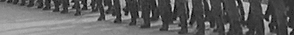

시작 전
주의사항
동의 후
스스로
길을 찾아
돌아가시요.

제1장 총칙
제1조(목적등) ①이 법은 국가의 안전을 위태롭게 하는 반국가활동을 규제함으로써 국가의 안전과 국민의 생존 및 자유를 확보함을 목적으로 한다.
②이 법을 해석적용함에 있어서는 제1항의 목적달성을 위하여 필요한 최소한도에 그쳐야 하며, 이를 확대해석하거나 헌법상 보장된 국민의 기본적 인권을 부당하게 제한하는 일이 있어서는 아니된다. [제목개정 1991. 5. 31.]
제2조(정의) ①이 법에서 "반국가단체"라 함은 정부를 참칭하거나 국가를 변란할 것을 목적으로 하는 국내외의 결사 또는 집단으로서 지휘통솔체제를 갖춘 단체를 말한다. [제목개정 1991. 5. 31.]
제2장 죄와 형
제3조(반국가단체의 구성등) ①반국가단체를 구성하거나 이에 가입한 자는 다음의 구별에 따라 처벌한다.
1. 수괴의 임무에 종사한 자는 사형 또는 무기징역에 처한다.
2. 간부 기타 지도적 임무에 종사한 자는 사형ㆍ무기 또는 5년 이상의 징역에 처한다.
3. 그 이외의 자는 2년 이상의 유기징역에 처한다.
②타인에게 반국가단체에 가입할 것을 권유한 자는 2년 이상의 유기징역에 처한다.
③제1항 및 제2항의 미수범은 처벌한다.
④제1항제1호 및 제2호의 죄를 범할 목적으로 예비 또는 음모한 자는 2년 이상의 유기징역에 처한다.
⑤제1항제3호의 죄를 범할 목적으로 예비 또는 음모한 자는 10년 이하의 징역에 처한다.
제4조(목적수행) ①반국가단체의 구성원 또는 그 지령을 받은 자가 그 목적수행을 위한 행위를 한 때에는 다음의 구별에 따라 처벌한다.
1. 형법 제92조 내지 제97조ㆍ제99조ㆍ제250조제2항ㆍ제338조 또는 제340조제3항에 규정된 행위를 한 때에는 그 각조에 정한 형에 처한다.
2. 형법 제98조에 규정된 행위를 하거나 국가기밀을 탐지ㆍ수집ㆍ누설ㆍ전달하거나 중개한 때에는 다음의 구별에 따라 처벌한다.
가. 군사상 기밀 또는 국가기밀이 국가안전에 대한 중대한 불이익을 회피하기 위하여 한정된 사람에게만 지득이 허용되고 적국 또는 반국가단체에 비밀로 하여야 할 사실, 물건 또는 지식인 경우에는 사형 또는 무기징역에 처한다.
나. 가목외의 군사상 기밀 또는 국가기밀의 경우에는 사형ㆍ무기 또는 7년 이상의 징역에 처한다.
3. 형법 제115조ㆍ제119조제1항ㆍ제147조ㆍ제148조ㆍ제164조 내지 제169조ㆍ제177조 내지 제180조ㆍ제192조 내지 제195조ㆍ제207조ㆍ제208조ㆍ제210조ㆍ제250조제1항ㆍ제252조ㆍ제253조ㆍ제333조 내지 제337조ㆍ제339조 또는 제340조제1항 및 제2항에 규정된 행위를 한 때에는 사형ㆍ무기 또는 10년 이상의 징역에 처한다.
4. 교통ㆍ통신, 국가 또는 공공단체가 사용하는 건조물 기타 중요시설을 파괴하거나 사람을 약취ㆍ유인하거나 함선ㆍ항공기ㆍ자동차ㆍ무기 기타 물건을 이동ㆍ취거한 때에는 사형ㆍ무기 또는 5년 이상의 징역에 처한다.
5. 형법 제214조 내지 제217조ㆍ제257조 내지 제259조 또는 제262조에 규정된 행위를 하거나 국가기밀에 속하는 서류 또는 물품을 손괴ㆍ은닉ㆍ위조ㆍ변조한 때에는 3년 이상의 유기징역에 처한다.
6. 제1호 내지 제5호의 행위를 선동ㆍ선전하거나 사회질서의 혼란을 조성할 우려가 있는 사항에 관하여 허위사실을 날조하거나 유포한 때에는 2년 이상의 유기징역에 처한다.
②제1항의 미수범은 처벌한다.
③제1항제1호 내지 제4호의 죄를 범할 목적으로 예비 또는 음모한 자는 2년 이상의 유기징역에 처한다.
④제1항제5호 및 제6호의 죄를 범할 목적으로 예비 또는 음모한 자는 10년 이하의 징역에 처한다.
제5조(자진지원ㆍ금품수수) ①반국가단체나 그 구성원 또는 그 지령을 받은 자를 지원할 목적으로 자진하여 제4조제1항 각호에 규정된 행위를 한 자는 제4조제1항의 예에 의하여 처벌한다.
②국가의 존립ㆍ안전이나 자유민주적 기본질서를 위태롭게 한다는 정을 알면서 반국가단체의 구성원 또는 그 지령을 받은 자로부터 금품을 수수한 자는 7년 이하의 징역에 처한다.
③제1항 및 제2항의 미수범은 처벌한다.
④제1항의 죄를 범할 목적으로 예비 또는 음모한 자는 10년 이하의 징역에 처한다.
제6조(잠입ㆍ탈출) ①국가의 존립ㆍ안전이나 자유민주적 기본질서를 위태롭게 한다는 정을 알면서 반국가단체의 지배하에 있는 지역으로부터 잠입하거나 그 지역으로 탈출한 자는 10년 이하의 징역에 처한다.
②반국가단체나 그 구성원의 지령을 받거나 받기 위하여 또는 그 목적수행을 협의하거나 협의하기 위하여 잠입하거나 탈출한 자는 사형ㆍ무기 또는 5년 이상의 징역에 처한다.
④제1항 및 제2항의 미수범은 처벌한다.
⑤제1항의 죄를 범할 목적으로 예비 또는 음모한 자는 7년 이하의 징역에 처한다.
⑥제2항의 죄를 범할 목적으로 예비 또는 음모한 자는 2년 이상의 유기징역에 처한다.
제7조(찬양ㆍ고무등) ①국가의 존립ㆍ안전이나 자유민주적 기본질서를 위태롭게 한다는 정을 알면서 반국가단체나 그 구성원 또는 그 지령을 받은 자의 활동을 찬양ㆍ고무ㆍ선전 또는 이에 동조하거나 국가변란을 선전ㆍ선동한 자는 7년 이하의 징역에 처한다.
③제1항의 행위를 목적으로 하는 단체를 구성하거나 이에 가입한 자는 1년 이상의 유기징역에 처한다.
④제3항에 규정된 단체의 구성원으로서 사회질서의 혼란을 조성할 우려가 있는 사항에 관하여 허위사실을 날조하거나 유포한 자는 2년 이상의 유기징역에 처한다.
⑤제1항ㆍ제3항 또는 제4항의 행위를 할 목적으로 문서ㆍ도화 기타의 표현물을 제작ㆍ수입ㆍ복사ㆍ소지ㆍ운반ㆍ반포ㆍ판매 또는 취득한 자는 그 각항에 정한 형에 처한다.
⑥제1항 또는 제3항 내지 제5항의 미수범은 처벌한다.
⑦제3항의 죄를 범할 목적으로 예비 또는 음모한 자는 5년 이하의 징역에 처한다.
제8조(회합ㆍ통신등) ①국가의 존립ㆍ안전이나 자유민주적 기본질서를 위태롭게 한다는 정을 알면서 반국가단체의 구성원 또는 그 지령을 받은 자와 회합ㆍ통신 기타의 방법으로 연락을 한 자는 10년 이하의 징역에 처한다.
③제1항의 미수범은 처벌한다.
제9조(편의제공) ①이 법 제3조 내지 제8조의 죄를 범하거나 범하려는 자라는 정을 알면서 총포ㆍ탄약ㆍ화약 기타 무기를 제공한 자는 5년 이상의 유기징역에 처한다.
②이 법 제3조 내지 제8조의 죄를 범하거나 범하려는 자라는 정을 알면서 금품 기타 재산상의 이익을 제공하거나 잠복ㆍ회합ㆍ통신ㆍ연락을 위한 장소를 제공하거나 기타의 방법으로 편의를 제공한 자는 10년 이하의 징역에 처한다. 다만, 본범과 친족관계가 있는 때에는 그 형을 감경 또는 면제할 수 있다.
③제1항 및 제2항의 미수범은 처벌한다.
④제1항의 죄를 범할 목적으로 예비 또는 음모한 자는 1년 이상의 유기징역에 처한다.
제10조(불고지) 제3조, 제4조, 제5조제1항ㆍ제3항(第1項의 未遂犯에 한한다)ㆍ제4항의 죄를 범한 자라는 정을 알면서 수사기관 또는 정보기관에 고지하지 아니한 자는 5년 이하의 징역 또는 200만원 이하의 벌금에 처한다. 다만, 본범과 친족관계가 있는 때에는 그 형을 감경 또는 면제한다. [전문개정 1991ㆍ5ㆍ31]
제11조(특수직무유기) 범죄수사 또는 정보의 직무에 종사하는 공무원이 이 법의 죄를 범한 자라는 정을 알면서 그 직무를 유기한 때에는 10년 이하의 징역에 처한다. 다만, 본범과 친족관계가 있는 때에는 그 형을 감경 또는 면제할 수 있다.
제12조(무고, 날조) ①타인으로 하여금 형사처분을 받게 할 목적으로 이 법의 죄에 대하여 무고 또는 위증을 하거나 증거를 날조ㆍ인멸ㆍ은닉한 자는 그 각조에 정한 형에 처한다.
②범죄수사 또는 정보의 직무에 종사하는 공무원이나 이를 보조하는 자 또는 이를 지휘하는 자가 직권을 남용하여 제1항의 행위를 한 때에도 제1항의 형과 같다. 다만, 그 법정형의 최저가 2년미만일 때에는 이를 2년으로 한다.
제13조(특수가중) 이 법, 군형법 제13조ㆍ제15조 또는 형법 제2편제1장 내란의 죄ㆍ제2장 외환의 죄를 범하여 금고 이상의 형의 선고를 받고 그 형의 집행을 종료하지 아니한 자 또는 그 집행을 종료하거나 집행을 받지 아니하기로 확정된 후 5년이 경과하지 아니한 자가 제3조제1항제3호 및 제2항 내지 제5항, 제4조제1항제1호중 형법 제94조제2항ㆍ제97조 및 제99조, 동항제5호 및 제6호, 제2항 내지 제4항, 제5조, 제6조제1항 및 제4항 내지 제6항, 제7조 내지 제9조의 죄를 범한 때에는 그 죄에 대한 법정형의 최고를 사형으로 한다.
[단순위헌, 2002헌가5, 2002. 11. 28. 국가보안법(1980. 12. 31. 법률 제3318호로 전문개정된 것) 제13조 중 "이 법, 군형법 제13조ㆍ제15조 또는 형법 제2편 제1장 내란의 죄ㆍ제2장 외환의 죄를 범하여 금고 이상의 형의 선고를 받고 그 형의 집행을 종료하지 아니한 자 또는 그 집행을 종료하거나 집행을 받지 아니하기로 확정된 후 5년이 경과하지 아니한 자가 …… 제7조 제5항, 제1항의 죄를 범한 때에는 그 죄에 대한 법정형의 최고를 사형으로 한다."부분은 헌법에 위반된다.]
제14조(자격정지의 병과) 이 법의 죄에 관하여 유기징역형을 선고할 때에는 그 형의 장기 이하의 자격정지를 병과할 수 있다.
제15조(몰수ㆍ추징) ①이 법의 죄를 범하고 그 보수를 받은 때에는 이를 몰수한다. 다만, 이를 몰수할 수 없을 때에는 그 가액을 추징한다.
②검사는 이 법의 죄를 범한 자에 대하여 소추를 하지 아니할 때에는 압수물의 폐기 또는 국고귀속을 명할 수 있다.
제16조(형의 감면) 다음 각호의 1에 해당한 때에는 그 형을 감경 또는 면제한다.
1. 이 법의 죄를 범한 후 자수한 때
2. 이 법의 죄를 범한 자가 이 법의 죄를 범한 타인을 고발하거나 타인이 이 법의 죄를 범하는 것을 방해한 때
제17조(타법적용의 배제) 이 법의 죄를 범한 자에 대하여는 노동조합및노동관계조정법 제39조의 규정을 적용하지 아니한다.
제3장 특별형사소송규정
제18조(참고인의 구인ㆍ유치) ①검사 또는 사법경찰관으로부터 이 법에 정한 죄의 참고인으로 출석을 요구받은 자가 정당한 이유없이 2회 이상 출석요구에 불응한 때에는 관할법원판사의 구속영장을 발부받아 구인할 수 있다.
②구속영장에 의하여 참고인을 구인하는 경우에 필요한 때에는 근접한 경찰서 기타 적당한 장소에 임시로 유치할 수 있다.
제19조(구속기간의 연장) ①지방법원판사는 제3조 내지 제10조의 죄로서 사법경찰관이 검사에게 신청하여 검사의 청구가 있는 경우에 수사를 계속함에 상당한 이유가 있다고 인정한 때에는 형사소송법 제202조의 구속기간의 연장을 1차에 한하여 허가할 수 있다.
②지방법원판사는 제1항의 죄로서 검사의 청구에 의하여 수사를 계속함에 상당한 이유가 있다고 인정한 때에는 형사소송법 제203조의 구속기간의 연장을 2차에 한하여 허가할 수 있다.
③제1항 및 제2항의 기간의 연장은 각 10일 이내로 한다.
[단순위헌, 90헌마82, 1992. 4. 14. 국가보안법(1980. 12. 31. 법률제3318호, 개정 1991. 5. 31. 법률제4373호) 제19조중 제7조 및 제10조의 죄에 관한 구속기간 연장부분은 헌법에 위반된다.]
제20조(공소보류) ①검사는 이 법의 죄를 범한 자에 대하여 형법 제51조의 사항을 참작하여 공소제기를 보류할 수 있다.
②제1항에 의하여 공소보류를 받은 자가 공소의 제기없이 2년을 경과한 때에는 소추할 수 없다.
③공소보류를 받은 자가 법무부장관이 정한 감시ㆍ보도에 관한 규칙에 위반한 때에는 공소보류를 취소할 수 있다.
④제3항에 의하여 공소보류가 취소된 경우에는 형사소송법 제208조의 규정에 불구하고 동일한 범죄사실로 재구속할 수 있다.
제4장 보상과 원호
제21조(상금) ①이 법의 죄를 범한 자를 수사기관 또는 정보기관에 통보하거나 체포한 자에게는 대통령령이 정하는 바에 따라 상금을 지급한다.
②이 법의 죄를 범한 자를 인지하여 체포한 수사기관 또는 정보기관에 종사하는 자에 대하여도 제1항과 같다.
③이 법의 죄를 범한 자를 체포할 때 반항 또는 교전상태하에서 부득이한 사유로 살해하거나 자살하게 한 경우에는 제1항에 준하여 상금을 지급할 수 있다.
제22조(보로금) ①제21조의 경우에 압수물이 있는 때에는 상금을 지급하는 경우에 한하여 그 압수물 가액의 2분의 1에 상당하는 범위안에서 보로금을 지급할 수 있다.
②반국가단체나 그 구성원 또는 그 지령을 받은 자로부터 금품을 취득하여 수사기관 또는 정보기관에 제공한 자에게는 그 가액의 2분의 1에 상당하는 범위안에서 보로금을 지급할 수 있다. 반국가단체의 구성원 또는 그 지령을 받은 자가 제공한 때에도 또한 같다.
③보로금의 청구 및 지급에 관하여 필요한 사항은 대통령령으로 정한다.
제23조(보상) 이 법의 죄를 범한 자를 신고 또는 체포하거나 이에 관련하여 상이를 입은 자와 사망한 자의 유족은 대통령령이 정하는 바에 따라 「국가유공자 등 예우 및 지원에 관한 법률」에 따른 공상군경 또는 순직군경의 유족이나 「보훈보상대상자 지원에 관한 법률」에 따른 재해부상군경 또는 재해사망군경의 유족으로 보아 보상할 수 있다. [전문개정 1991ㆍ5ㆍ31]
제24조(국가보안유공자 심사위원회) ①이 법에 의한 상금과 보로금의 지급 및 제23조에 의한 보상대상자를 심의ㆍ결정하기 위하여 법무부장관소속하에 국가보안유공자 심사위원회(이하 "委員會"라 한다)를 둔다.
②위원회는 심의상 필요한 때에는 관계자의 출석을 요구하거나 조사할 수 있으며, 국가기관 기타 공ㆍ사단체에 조회하여 필요한 사항의 보고를 요구할 수 있다.
③위원회의 조직과 운영에 관하여 필요한 사항은 대통령령으로 정한다.
제25조(군법 피적용자에 대한 준용규정) 이 법의 죄를 범한 자가 군사법원법 제2조제1항 각호의 1에 해당하는 자인 때에는 이 법의 규정중 판사는 군사법원군판사로, 검사는 군검찰부 군검사로, 사법경찰관은 군사법경찰관으로 본다.
부칙 [제13722호, 2016. 1. 6.] (군사법원법)
제1조(시행일) 이 법은 공포 후 1년 6개월이 경과한 날부터 시행한다.
제2조부터 제8조까지 생략
제9조(다른 법률의 개정) ①부터 ③까지 생략
④ 국가보안법 일부를 다음과 같이 개정한다.
제25조 중 "군검찰부검찰관으로"를 "군검찰부 군검사로"로 한다.
제10조 생략